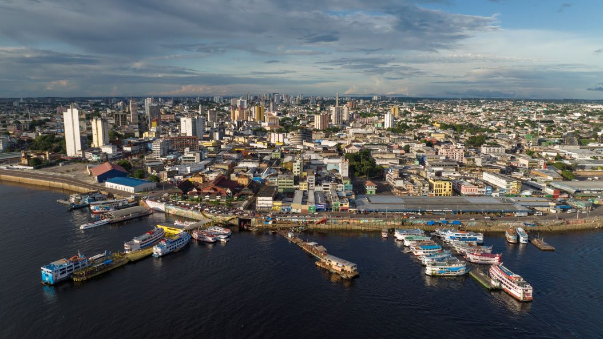
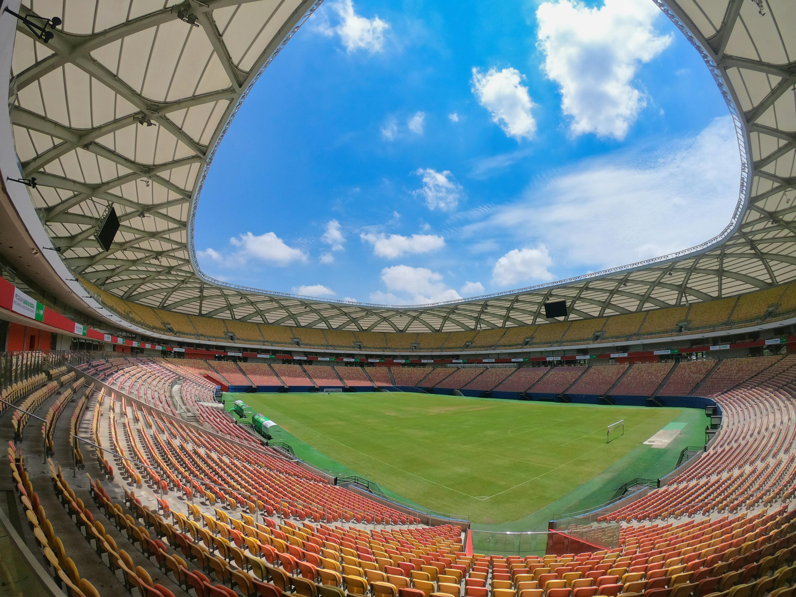

Manaus
Venha visitar
Sobre a cidade
Manaus é uma cidade rica em história e cultura, situada no coração da Amazônia. Fundada em 1669 com a construção do Forte de São José do Rio Negro, Manaus começou como um pequeno povoado chamado Lugar da Barra do Rio Negro, destinado a proteger a região contra invasões estrangeiras e conflitos com indígenas. A cidade cresceu lentamente até o final do século XIX, quando a economia do látex transformou Manaus em um próspero centro urbano.
Durante o ciclo da borracha, entre 1879 e 1912, Manaus viveu seu auge econômico. A extração e exportação do látex trouxeram riqueza e desenvolvimento, resultando na construção de edifícios suntuosos, como o Teatro Amazonas, o Palácio Rio Negro e o Mercado Municipal Adolpho Lisboa, todos exemplos da opulência da época. Manaus se tornou uma cidade cosmopolita, com infraestrutura moderna e intensa atividade cultural.
Com o declínio do ciclo da borracha no início do século XX, Manaus enfrentou um período de estagnação econômica. No entanto, a criação da Zona Franca de Manaus em 1967 revitalizou a cidade, promovendo a industrialização e atraindo investimentos nacionais e internacionais. Hoje, a Zona Franca é um polo econômico crucial, diversificando a economia local com indústrias de eletroeletrônicos, motocicletas e bens de consumo.
Manaus também se destaca por sua biodiversidade e cultura única, sendo um ponto de partida para explorar a Floresta Amazônica. A cidade é conhecida por seus rios majestosos, como o Rio Negro e o Rio Solimões, que se encontram formando o famoso Encontro das Águas. Além disso, a culinária regional, rica em sabores amazônicos, e a vibrante cena cultural, com festivais como o Festival de Parintins, são grandes atrativos.
A cidade continua a crescer como um importante centro de turismo ecológico e cultural. O ecoturismo prospera, com visitantes do mundo inteiro atraídos pelas belezas naturais e pela oportunidade de vivenciar a rica herança cultural amazônica. Manaus é um testemunho vivo de como uma cidade pode se reinventar e prosperar, mantendo-se fiel às suas raízes históricas e culturais.
Venha descobrir Manaus, uma cidade que mistura modernidade e natureza exuberante, oferecendo uma experiência única e inesquecível no coração da Amazônia.
Pontos turísticos
Descubra alguns dos pontos mais atrativos de Manaus para visitar:
- Teatro Amazonas
- Encontro das Águas
- Mercado Municipal Adolpho Lisboa
- Arena da Amazônia
- Ponte Rio Negro
Galeria de fotos
Confira algumas belíssimas imagens da cidade na galeria abaixo: